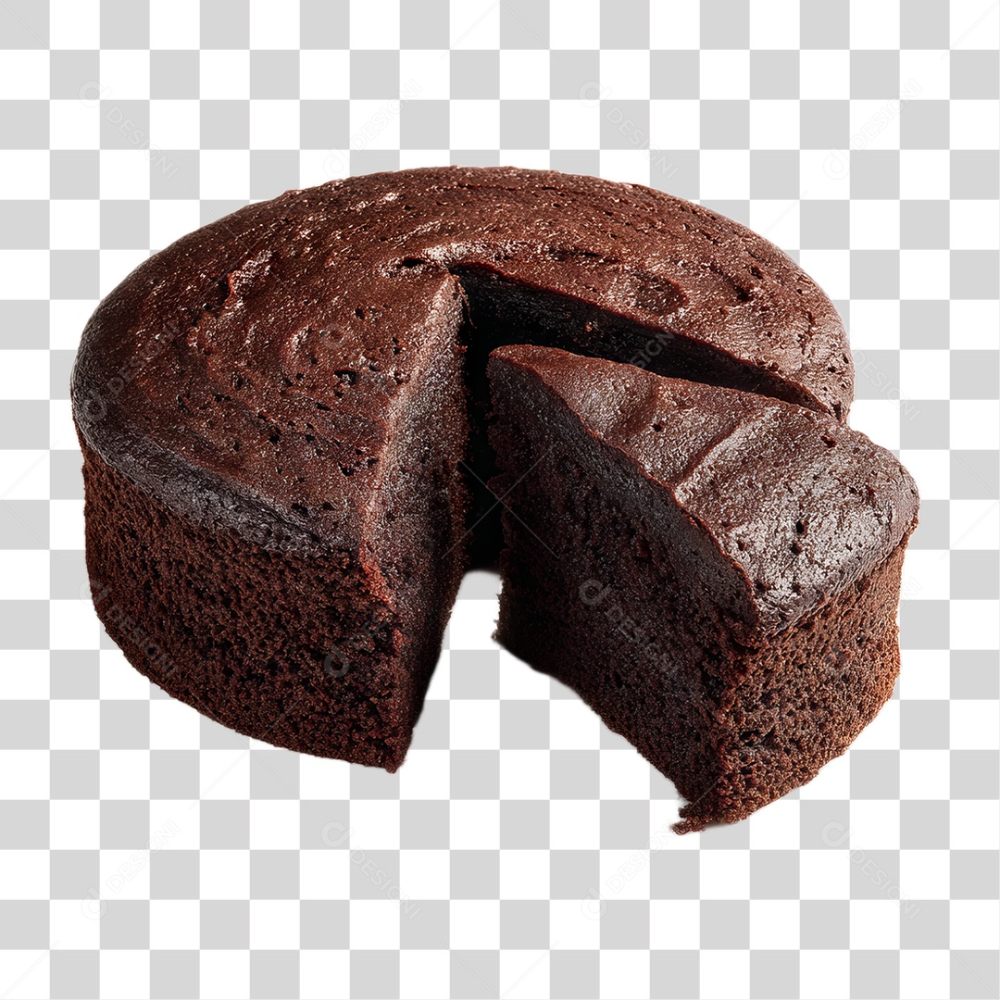

« Voltar à Página Principal
Ingredientes Necessários
- 2 chávenas de farinha de trigo
- 1 chávena de cacau em pó
- 1 chávenas de açúcar
- 3 ovos
- 1 chávena de leite
- 1/2 chávena de óleo
- 1 colher de sopa de fermento em pó
Resultado Final


Vídeo da Receita
Informação da Receita
| Tempo de Preparação
| Tempo de Forno
| Rendimento
|
| 15 minutos |
35 minutos |
10 fatias |